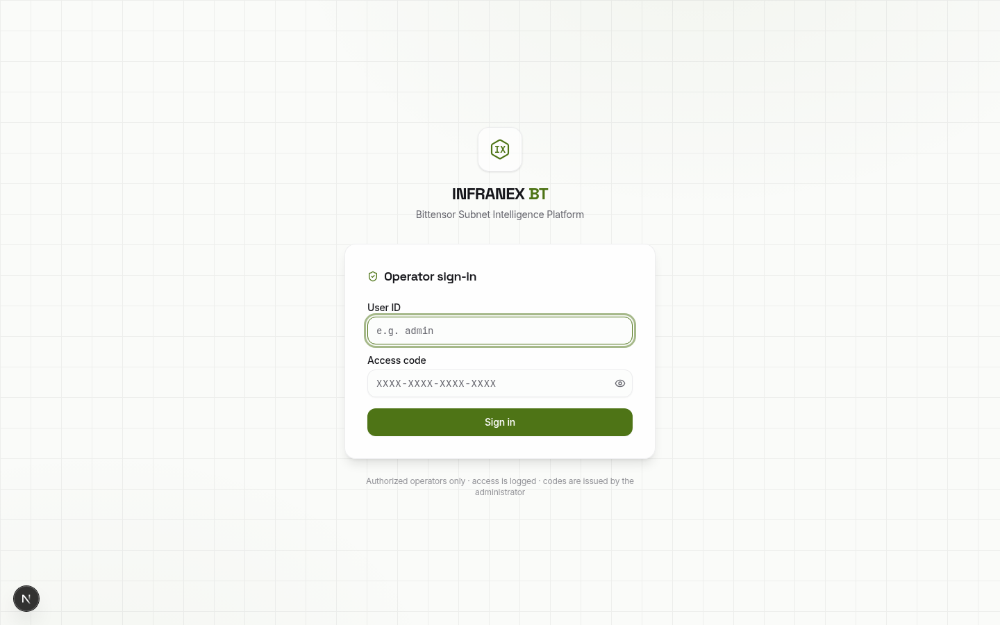
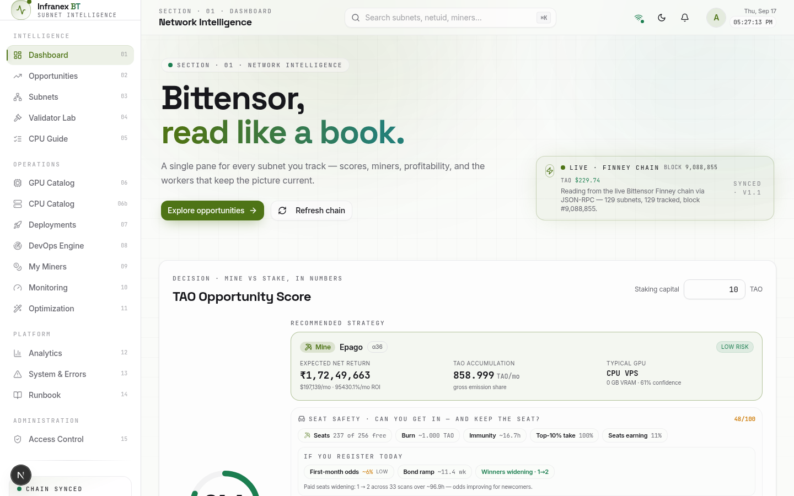
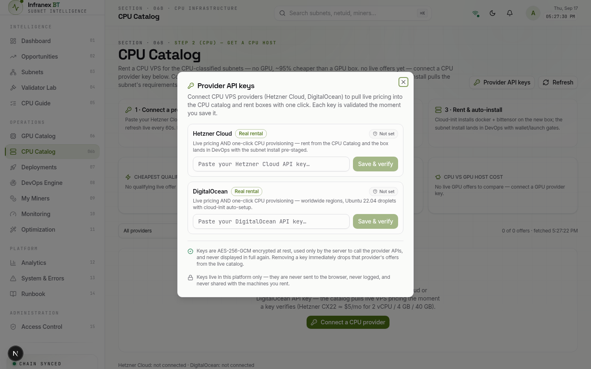
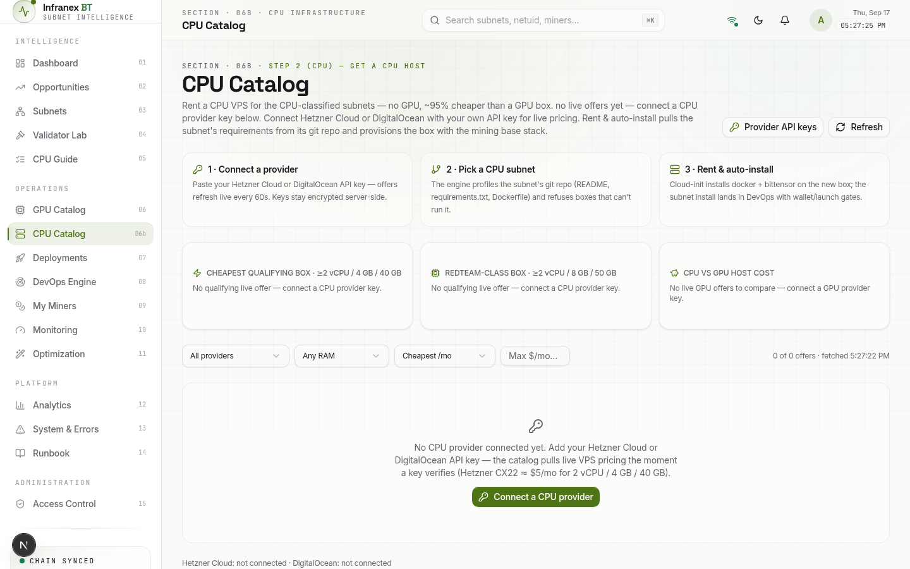
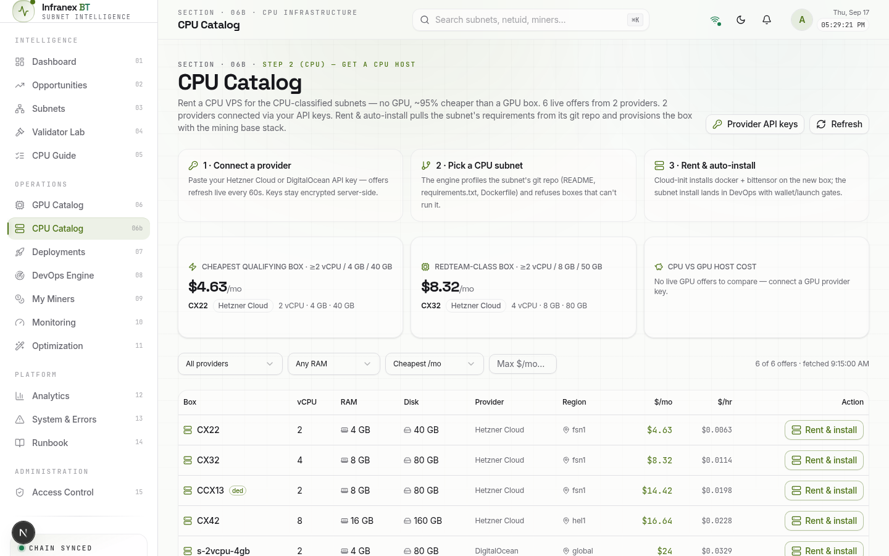
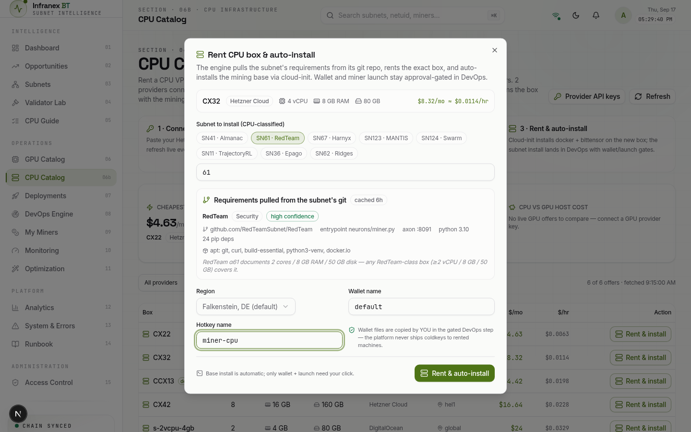
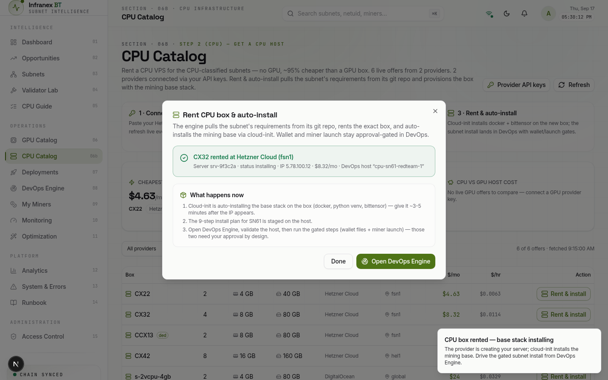
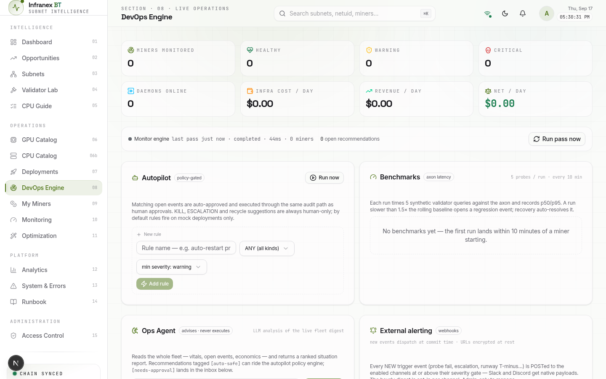
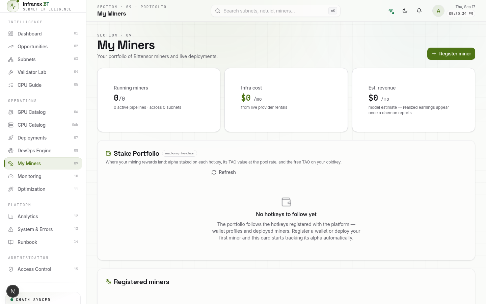
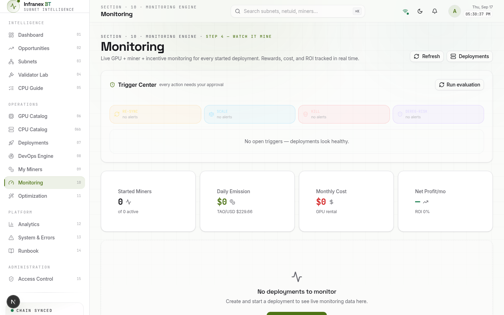

The CPU path in one page
This guide is written for a first-time miner. It walks you through the exact clicks and commands that take you from a fresh sign-in to a running CPU miner on a Bittensor subnet — using subnet 61 (RedTeam) as the worked example. Every screen shot was taken from the live platform; the two figures marked example data use a representative offer so you can see what the catalog looks like once your own API key is connected.
The CPU path exists because a large family of Bittensor subnets do their work with ordinary processors, not graphics cards. The platform's work-type classifier reads each subnet's public git repo — its README, requirements.txt and Dockerfile — and files it as CPU-classified, GPU-classified, or CPU VPS-class. For those CPU-classified subnets, renting a GPU is wasted money: the typical CPU-classified subnet needs about 2 vCPU / 4–8 GB RAM / 40–50 GB disk, which costs $5–9 per month, while the cheapest useful GPU box (an RTX 3090) runs around $161 per month. Same chain, same rewards table, a fraction of the overhead.
The journey at a glance
The worked example used throughout
Where the money moves
| Move | Amount | What it is |
|---|---|---|
| You → Hetzner / DigitalOcean | $4.63–8.32/mo | The CPU box. Metered hourly (~$0.006–0.011/hr), billed monthly. Runs until you destroy it — teardown costs nothing extra. |
| Coldkey → chain burn | one-off recycle fee | Registering your hotkey on SN61. The app shows the live burn figure on the CPU Guide (05) and Subnets (03) views — it floats with seat demand, so check it before you register. |
| Coldkey mnemonic | — | Never leaves your machine. You copy the wallet files to the box yourself, in an approval-gated step. The platform never ships coldkeys. |
| Platform API keys | $0 | Connecting a key is free — you only pay the provider when a box is actually created. |
Before you start — have these ready
CPU path or GPU path?
| Question | CPU path (this guide) | GPU path (companion guide) |
|---|---|---|
| Subnet type | CPU-classified — e.g. SN61 RedTeam, SN67 Harnyx script mining | GPU-classified — e.g. SN64 Chutes, SN36 Epago (vision) |
| Host cost | ~$5–20/mo (2–8 vCPU VPS) | ~$161+/mo (RTX 3090 or better) |
| How you get the box | CPU Catalog → Rent & auto-install, or manual VPS in Part C | GPU Catalog → deploy wizard |
| Base stack install | Automatic (cloud-init) on the platform path | Automatic after pod start |
| Wallet & launch | Identical on both paths: approval-gated in DevOps Engine — the platform never touches your coldkey. | |
Platform Prep — Sign In & Connect a CPU Provider
Three goals: get into the platform, create an API key at a CPU provider, and hand that key to the CPU Catalog. Nothing here costs money — the provider only bills you when a box is actually created, which happens in Part B when you choose to click Rent.
A1 · Sign in and land on the dashboard
Open the preview link in your browser, then enter your operator User ID and access code and press Sign in. If the page was left open from a previous session, the app restores you automatically.
After sign-in you land on the Dashboard (01) — the opportunities table scans the chain and lists subnets with their classification, cost target and hardware hints. You do not need to configure anything here, but it is worth glancing at: every CPU-classified subnet you see is a candidate for this guide.


A2 · Create an API key at your provider
The CPU Catalog speaks to two providers: Hetzner Cloud (best prices, EU/US datacenters) and DigitalOcean (worldwide regions, slightly pricier). Either works — this guide follows Hetzner for the worked example, and the DigitalOcean steps are identical in shape.
console.hetzner.cloud→select or create a project→Security→API tokens→Generate API token
- Choose the Read and Write permission — a read-only token can show prices but cannot create the server when you click Rent.
- Copy the token immediately — Hetzner shows it exactly once. If you lose it, delete the token and generate a new one.
- The token belongs to one project; make sure the project is in a billing-enabled state (a payment method or the free trial credit both count).
cloud.digitalocean.com→API→Generate New Token
- Give it Full Access (write scope) for one-click renting, or read-only if you only want live pricing.
- Pick an expiration you will remember — when the token expires, offers silently disappear until you paste a fresh one.
A3 · Connect the key in the platform
In the sidebar under Operations, open CPU Catalog · 06b and press Provider API keys (top-right). The dialog lists both CPU providers with a Real rental badge — that means the platform can both show live pricing and create the server for you.
Paste your Hetzner token into its field and press Save & verify. The key is validated the moment you save it — a green status pill appears when the provider accepts it. Repeat for DigitalOcean if you created a token there too. Within seconds the catalog pulls live VPS pricing; offers keep refreshing every 60 seconds from then on.

Reading the CPU Catalog
The catalog is honest by design: before a key is connected it shows you exactly what is missing, and after connecting it only recommends boxes that can actually run the subnet's code. Learn the two states once and you can always tell whether you are looking at real supply.
B1 · The two states of the catalog
Without a key (Figure 4) the catalog says so plainly: "No CPU provider connected yet", the three recommendation cards read "No qualifying live offer", and the provider status line at the bottom shows each provider as not connected. The single green button — Connect a CPU provider — opens the same dialog you used in A3.
With a key (Figure 5) the same page fills with supply: the header counts the live offers and connected providers, the cards show the cheapest qualifying box and the current RedTeam-class pick, and the offers table lists every rentable VPS with vCPU, RAM, disk, region and price.


B2 · The three recommendation cards
- Cheapest qualifying box · ≥2 vCPU / 4 GB / 40 GB — the absolute floor for CPU-classified subnets. Real money-saver, but only choose it if your subnet is this light; a heavy subnet on a floor box will run slow or get refused by the profiler.
- RedTeam-class box · ≥2 vCPU / 8 GB / 50 GB — the spec SN61 RedTeam documents (2 cores / 8 GB / 50 GB disk). This is the safe default for the worked example, and for many security/agent subnets.
- CPU vs GPU host cost — a live comparison: the CPU box's monthly price next to the cheapest live GPU offer, and the percentage you are saving. Connect a GPU provider key too if you want this card populated.
B3 · Filters and choosing a box
Above the table sit four filters: All providers, Any RAM (raise to ≥ 8 GB for RedTeam-class), Cheapest /mo (or sort by vCPU/RAM/disk), and a Max $/mo box for a hard budget cap. The counter on the right ("6 of 6 offers · fetched 9:15:00 AM") confirms the data is live.
| Box | Spec | ~$/mo | Verdict for SN61 RedTeam |
|---|---|---|---|
| CX22 | 2 vCPU · 4 GB · 40 GB | $4.63 | At the floor — fits only the lightest CPU subnets; below RedTeam's 8 GB RAM guidance. |
| CX32 | 4 vCPU · 8 GB · 80 GB | $8.32 | The worked example. Clears RedTeam-class with headroom at a hobbyist price. |
| CCX13 (ded) | 2 vCPU · 8 GB · 80 GB | $14.42 | Dedicated cores — pick when a shared-tenancy box shows CPU-steal in Monitoring. |
| CX42 | 8 vCPU · 16 GB · 160 GB | $16.64 | Overkill for SN61; sensible for running several CPU miners on one box. |
| DO s-2vcpu-4gb | 2 vCPU · 4 GB · 80 GB | $24.00 | DigitalOcean's entry tier — pick it only when you need a specific DO region (e.g. blr1, sgp1). |
Rent & Auto-Install
This is the one click that creates a real server in your provider account. Everything about the flow is designed so you see exactly what will be installed before any money is committed — the subnet's requirements are pulled from its git repo and displayed first, and the wallet/launch decisions stay gated until Part D.
C1 · Open the rent dialog
Find your chosen box in the offers table and press Rent & install on its row. The Rent CPU box & auto-install dialog opens with the offer pinned at the top — model, provider, vCPU/RAM/disk and the monthly price next to its hourly equivalent (monthly ÷ 730).
For the worked example: the CX32 row — 4 vCPU · 8 GB · 80 GB, $8.32/mo ≈ $0.0114/hr. Billing starts the moment the provider accepts the create call, and stops the moment you destroy the server.
C2 · Walk through the dialog, top to bottom
The dialog offers one-click chips for every CPU-classified subnet the scanner currently knows — for the worked example, SN61 · RedTeam. You can also type any netuid into the input (e.g. 61). Choose the subnet you intend to mine; the chip you pick decides what gets profiled and staged.
The moment a subnet is selected, the engine fetches its public repo artifacts — chain identity, README, requirements.txt, Dockerfile — and prints the verdict right in the dialog: subnet name and category, a confidence badge (high/medium/low), repo URL, entrypoint, axon port, python version, pip dependency count and the apt packages it will install. For SN61 the panel shows RedTeam · Security · high confidence, entrypoint neurons/miner.py, axon :8091.
Read this panel before you click anything else — it is the contract of what the box will run. If the subnet turns out to document GPU requirements, the dialog refuses to continue and tells you to use the GPU Catalog instead.
- Region — pick a datacenter close to the chain's validators. Hetzner defaults to Falkenstein DE (fsn1); DigitalOcean offers nine regions from New York to Bangalore. Any choice works; lower validator latency never hurts scores.
- Wallet name — your existing coldkey's name (usually default), created on your laptop with btcli. This is only a label used later in the install plan.
- Hotkey name — a fresh name for this miner, e.g. miner-cpu. The dialog accepts letters, digits, dashes and underscores.
- The shield note at the bottom of the form is worth reading twice: "Wallet files are copied by YOU in the gated DevOps step — the platform never ships coldkeys to rented machines."

C3 · Click Rent & auto-install
Pressing Rent & auto-install triggers the pipeline: (1) the platform calls your provider with the exact offer — CX32, fsn1 — and injects a fresh ephemeral SSH key; (2) cloud-init runs on first boot and installs the mining base stack (docker, python venv tooling, bittensor); (3) the box is registered as a DevOps host over SSH transport; (4) the subnet's install plan is staged on it, waiting for you in DevOps Engine.
The success panel confirms the rental — server id, status, IP address (or "IP pending" for the first seconds), monthly price and the DevOps host name — and lists the three things that happen next. None of them need you to be fast; give the base install 3–5 minutes after the IP appears.

Finish in DevOps Engine
DevOps Engine (08) is the operations cockpit where the rented box becomes a miner. The install plan arrives pre-staged, but three steps stay deliberately manual: validating the host, copying your wallet files, and approving the miner launch. This is the platform's hotkey-only policy doing its job.
D1 · Validate the new host
From the success panel press Open DevOps Engine, or pick DevOps Engine · 08 in the sidebar. Your new host appears with its provider, region, IP and status. Press Validate to have the platform SSH in and confirm the base stack landed: docker version, python venv, btcli. Validation turns the host green and unlocks the install plan steps beneath it.
D2 · The gated steps — wallet files, registration, launch
If you already have a Bittensor coldkey, skip to D2b. Otherwise install btcli locally and create the wallet pair now. This runs on your machine, touches no money, and the mnemonic never leaves your laptop:
$ pip install bittensor $ btcli wallet new_coldkey --wallet.name default mnemonic: olympic liquid piano ... ← shown ONCE — write it on paper $ btcli wallet new_hotkey --wallet.name default --wallet.hotkey miner-cpu $ btcli wallet overview --wallet.name default coldkey: default balance: 0.000 TAO hotkeys: 1
DevOps Engine shows a Copy wallet files gate with the exact destination. The platform never moves coldkeys — you do, with your own scp command (the host record carries the SSH details). Copy only the hotkey file plus the coldkeypub.txt public file if you can; keep the sealed coldkey file on your laptop unless the subnet's plan genuinely needs it.
$ scp -r ~/.bittensor/wallets/default root@<box-ip>:/root/.bittensor/wallets/ # keep coldkeyseal (the sealed private file) local unless the plan requires it
Registering binds your hotkey to subnet 61 and consumes a dynamic recycle fee — irreversible, sized by seat demand. Check the live figure first: the CPU Guide (05) view and the Subnets (03) view both show SN61's current burn cost. Then run:
$ btcli subnets register --netuid 61 --wallet.name default --wallet.hotkey miner-cpu ✅ Registered hotkey miner-cpu on netuid 61 (recycle burned)
The final gate — Launch miner — runs the subnet's staged install plan: clone the repo, install its pinned dependencies, write the environment (wallet/hotkey names, netuid, network), and start the miner process under supervision. Read the step list, then approve. DevOps shows the live step counter until the last step completes.
D3 · Why these steps are gated
Everything destructive or secret-bearing — moving wallet files, burning TAO, starting a process — requires an explicit human click, and every action is written to the audit log. That is not caution theater: on the GPU path the same gates exist, and they have prevented more than one mis-clicked deployment from burning a seat on the wrong subnet. The platform automates the parts that are safe to automate (provisioning, base install, dependency wiring) and keeps you in command of the parts that are not.

Verify You Are Mining
Two layers of verification: the platform's (My Miners and Monitoring) and the box's own (processes and ports). Check both once after launch, then let the monitoring layer do its job.
E1 · Check the platform views
My Miners lists your miner with its subnet, host and status — after a successful launch the miner should show as running on SN61. Monitoring adds the health timeline: axon latency probes every 10 minutes, CPU and memory gauges, and cost tracking that reads the box's real hourly price. If a probe fails or the box drifts, Monitoring opens a recommendation instead of failing silently.


E2 · Check the box itself
$ ssh root@<box-ip> # is the miner process alive? $ screen -ls There is a screen on: 1 Socket in /run/screen/S-root. # is the axon port listening? $ ss -tlnp | grep 8091 LISTEN 0 4096 *:8091 *:* users:(("python",pid=1844,fd=18)) # does the chain see your hotkey on SN61? $ btcli wallet overview --wallet.name default --network finney # what did the miner log recently? $ tail -n 40 /var/log/miner/sn61.log
E3 · What "earning" honestly looks like
CPU subnet rewards follow emissions, competition and — for work subnets like RedTeam — the quality of what your miner serves. A freshly registered hotkey typically earns little until it proves itself in the validator's scoring window; treat the first days as calibration, watch the daily net line in Monitoring, and let the numbers decide whether to scale up, tune, or tear down. The Opportunities (02) view re-ranks subnets continuously, so if SN61 economics shift, the platform will tell you before your invoice does.
The Manual DIY Path — No Platform
Everything in Parts A–B can also be done by hand, directly in your provider's console and an SSH terminal. Some operators prefer this for learning; some need a box the platform cannot reach. You trade the auto-install and monitoring for full manual control — the same box, the same base stack, and the same "wallet never leaves your laptop" rule.
F1 · Create the box in the provider console
console.hetzner.cloud→your project→Add Server
- Location — Falkenstein or Helsinki for EU latency, Ashburn/Hillsboro for US.
- Image — Ubuntu 22.04 (the same OS the platform's cloud-init targets).
- Type — CX32 for the RedTeam-class worked example (4 vCPU / 8 GB / 80 GB); CCX-series only if you want dedicated cores.
- SSH key — upload your laptop's public key (~/.ssh/id_ed25519.pub) rather than using a password.
- DigitalOcean equivalent: Create → Droplets, Ubuntu 22.04 x64, Basic plan s-2vcpu-4gb or larger, your SSH key, a region near you.
F2 · Install the base stack by hand
This is precisely what cloud-init automates on the platform path — five commands on a fresh Ubuntu 22.04 box:
$ apt update && apt -y upgrade $ apt -y install git curl build-essential python3-venv docker.io $ python3 -m venv /opt/btvenv && source /opt/btvenv/bin/activate $ pip install bittensor $ btcli --version # sanity check
F3 · Wallet, registration, and the miner itself
Create the wallet pair on your laptop (D2a), copy the files up (D2b), and register the hotkey (D2c) — identical commands and the same one-time burn. Then clone the subnet's repo and run its miner the way its README prescribes:
$ git clone https://github.com/RedTeamSubnet/RedTeam.git /opt/sn61 $ cd /opt/sn61 && pip install -r requirements.txt $ screen -S sn61 $ python neurons/miner.py --netuid 61 \ --wallet.name default --wallet.hotkey miner-cpu --network finney # detach with Ctrl-A D; reattach later with: screen -r sn61
Troubleshooting & Economics
The nine failures seen most often, what each one means, and the fix. Most issues are configuration, not catastrophe — and only one of them burns money permanently.
H1 · When something goes wrong
| Symptom | What it means and the fix |
|---|---|
| "Key check failed" after Save & verify | The token was copied short, expired, or lacks scope. Regenerate at the provider (Read+Write for Hetzner, Full Access for DO) and paste again. Check for a trailing space when copying. |
| Catalog still empty after connecting | Press Refresh; check the status line — it names each provider's state. "error — 401/403" means the key; "0 offers" with a valid key means a filter is hiding rows. |
| "No qualifying live offer" on a card | True, not a bug: no connected provider currently sells a box at that spec. Raise your provider coverage (connect both), or relax the RAM/price filters. |
| "SN documents GPU requirements" refusal | The profiler found GPU deps in the subnet's repo — a CPU box cannot serve it. Pick a CPU-classified subnet, or rent that netuid from the GPU Catalog instead. |
| "Profiler failed" in the dialog | The repo fetch timed out (rate limit or network). Retry once; if it persists you can still rent and stage the install manually from DevOps later. |
| Success panel says "IP pending" | Normal for the first ~30 seconds. Wait, then re-check the host in DevOps Engine before assuming a problem. |
| Host validation fails in DevOps | Cloud-init is still running (give it 3–5 minutes after IP) or was interrupted — re-run Validate; if it keeps failing, destroy the box and rent again. |
| Miner runs but never earns | Check the three usuals: hotkey actually registered on the netuid (btcli subnets list), axon port reachable (firewall/security-group must allow 8091), and validator scores in Monitoring. On SN61 also read the CPU Guide (05) — a weak agent scores weakly. |
| Invoice higher than expected | The box bills hourly while it exists, miner or not. Destroy idle boxes (H1 teardown below) — the platform path keeps the DevOps host record so you can re-rent in one click later. |
H2 · Costs, honestly
| Item | CPU path | GPU path (for comparison) |
|---|---|---|
| Host (rented) | $4.63–16.64/mo (worked example $8.32) | ~$161/mo (RTX 3090 class) |
| Registration burn | One-off, dynamic recycle fee, same on both paths — live figure shown in CPU Guide (05) / Subnets (03) before you commit. | |
| Platform fees | $0 — the platform bills nothing; your costs are the provider and the burn. | |
| Idle cost | ~$0.006–0.011/hr while the box exists | ~$0.22/hr while the pod exists |
| Typical host share of a $100/mo net expectation | ~8% (CX32) | ~160% (GPU needs the big subnets to pay) |
H3 · Tearing down cleanly
Platform path: DevOps Engine → your host → Destroy — removes the server at the provider and marks the host record closed. Manual path: provider console → the server → Delete (Hetzner) / Destroy (DigitalOcean). Billing stops at deletion; the registration burn is chain state and is not refunded, but your hotkey stays valid if you come back with a new box under the same wallet names.
H4 · Command cheat sheet
| Command | What it does |
|---|---|
| btcli wallet new_coldkey --wallet.name default | Create a coldkey on your laptop (mnemonic shown once). |
| btcli wallet new_hotkey --wallet.hotkey miner-cpu | Create the miner's hotkey under that coldkey. |
| btcli subnets register --netuid 61 | Register the hotkey on SN61 — the one-time burn. |
| btcli wallet overview --network finney | Balances, hotkeys and registrations as the chain sees them. |
| screen -S sn61 / screen -r sn61 | Run the miner inside a persistent session; reattach anytime. |
| ss -tlnp | grep 8091 | Confirm the axon port is listening. |
| tail -f /var/log/miner/sn61.log | Follow the miner's log live. |